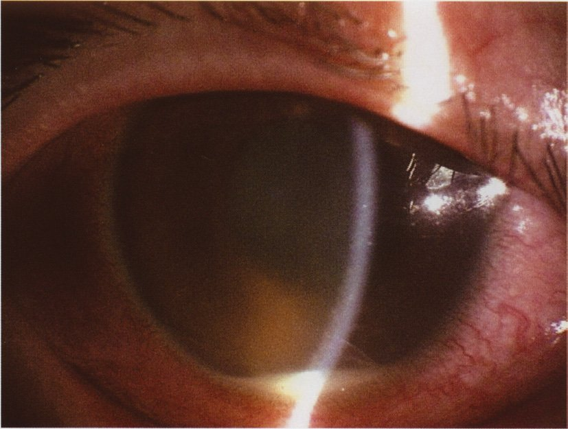
| 4主症状 | 内容 |
|---|---|
| ①口腔粘膜の再発性アフタ性潰瘍 | ほぼ全例・最初に出る。有痛性で瘢痕を残さず治る |
| ②皮膚症状 | 結節性紅斑様皮疹・毛嚢炎様皮疹・血栓性静脈炎・針反応陽性 |
| ③眼症状 | 前房蓄膿を伴う虹彩毛様体炎／網膜ぶどう膜炎（網膜血管炎） |
| ④外陰部潰瘍 | 有痛性・瘢痕を残す |
| 選択肢 | 解説 |
|---|---|
| ◯ ａ 針反応 | 正解。針反応〈pathergy test〉は前腕の皮内を注射針で刺し、24〜48時間後に2mm以上の膿疱・紅色丘疹ができるかを見る検査。Behçet病では好中球の過剰反応があり、わずかな刺激で無菌性の膿疱が立ち上がる——Behçet病診断基準の「副症状」に相当する検査所見である。日本では陽性率が低下傾向にあるが、陽性なら診断的価値がきわめて高い（特異度が高い）。 |
| ｂ 聴力検査 | 難聴・耳鳴りはVogt-小柳-原田病〈VKH〉の症状（内耳のメラノサイトが標的になる）。本例は有痛性の口内炎の反復と片眼の前房蓄膿で、VKHの特徴（両眼同時発症・頭痛・耳鳴り・漿液性網膜剝離）をいずれも欠く。 |
| ｃ 胸部エックス線撮影 | 両側肺門リンパ節腫脹〈BHL〉を探す検査＝サルコイドーシスを疑うときのもの。サルコイドーシスのぶどう膜炎は豚脂様角膜後面沈着物・虹彩結節・雪玉状硝子体混濁が主体で、前房蓄膿は典型的でない。 |
| ◯ ｄ 組織適合抗原〈HLA〉検査 | 正解。Behçet病はHLA-B51と強く相関する（日本人患者の約6割が陽性・健常者は約15%）。単独では確定診断にならないが、臨床症状と合わせて診断を支持する副症状扱いの検査として国試では頻出。「口内炎＋眼発作＝HLA-B51と針反応」をセットで想起できるかを問う問題である。 |
| ｅ 血清アンジオテンシン変換酵素測定 | 血清ACE上昇＝サルコイドーシス（肉芽腫の類上皮細胞がACEを産生する）。Behçet病では特異的な血液マーカーが無いのが特徴で、炎症時にCRP・赤沈が上がるだけである——「マーカーが無いから臨床症状で診断する」のがBehçet病の型。 |
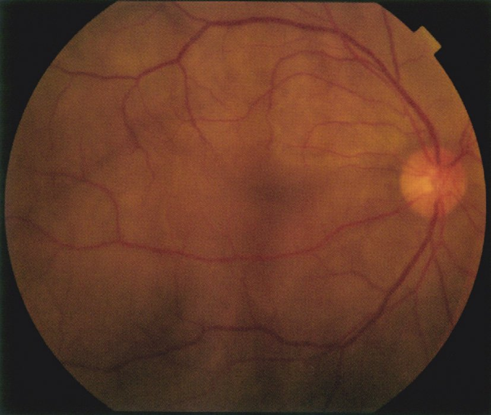
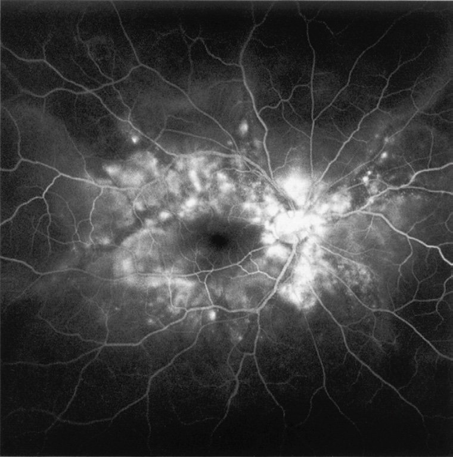
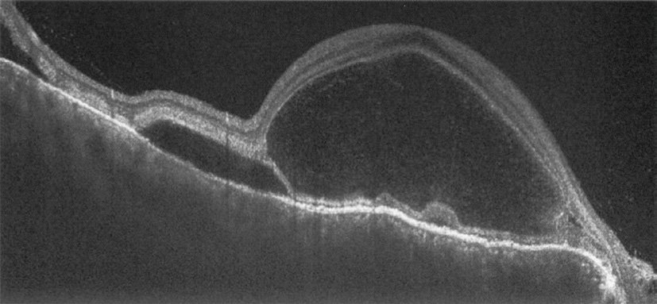
| 病期 | 症状 |
|---|---|
| 前駆期（数日） | 感冒様症状・頭痛・発熱・耳鳴り・難聴・めまい（髄膜＋内耳） |
| 眼病期（急性期） | 両眼性・肉芽腫性の汎ぶどう膜炎／多発性の漿液性網膜剝離／視神経乳頭発赤・腫脹／脈絡膜肥厚 |
| 回復期（数か月〜） | 夕焼け状眼底・Dalen-Fuchs結節／白斑〈vitiligo〉・白毛〈poliosis〉・脱毛 |
| 選択肢 | 解説 |
|---|---|
| ａ 針反応 | 針反応＝Behçet病。Behçet病は片眼から始まる発作性の前房蓄膿が主体で、両眼同時の漿液性網膜剝離は作らない。また本例には口腔潰瘍・外陰部潰瘍・皮疹の記載が無い。 |
| ◯ ｂ 脳脊髄液検査 | 正解。Vogt-小柳-原田病〈VKH〉である。診断基準の中で他の疾患と決定的に分ける項目が「髄液細胞増多（リンパ球優位の単核球増加）」——前駆期の頭痛・耳鳴り・髄膜刺激症状の正体がこれで、発症2週以内なら約8割で陽性になる。「耳鳴り＋頭痛＋両眼の漿液性網膜剝離」の3点が揃ったら、髄液細胞増多を取りにいくのが定型である。 |
| ｃ パッチテスト | パッチテストはアレルギー性接触皮膚炎の原因抗原を同定する皮膚科の検査（Ⅳ型アレルギー）。ぶどう膜炎の鑑別に用いる場面は無い。 |
| ｄ ツベルクリン反応 | 結核性ぶどう膜炎やサルコイドーシス（陰性化を確認する）で意味を持つ検査。サルコイドーシスなら豚脂様角膜後面沈着物・虹彩結節・雪玉状硝子体混濁が並ぶはずで、両眼の漿液性網膜剝離が主役になる紙面ではない。 |
| ｅ 胸部エックス線検査 | 両側肺門リンパ節腫脹〈BHL〉を探す＝サルコイドーシスの検査。VKHは眼・内耳・髄膜・皮膚（メラノサイトのある場所）の病気で、肺は標的にならない。 |
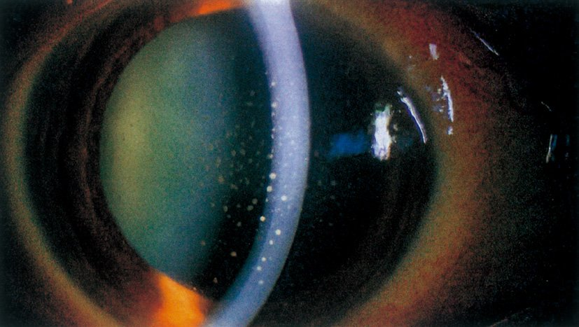
| 眼所見 | 内容 |
|---|---|
| 豚脂様角膜後面沈着物 | 角膜内皮面に付く大きな灰白色の粒＝肉芽腫性ぶどう膜炎の印 |
| 虹彩結節 | Koeppe結節（瞳孔縁）・Busacca結節（虹彩実質） |
| 隅角結節・テント状周辺虹彩前癒着 | 続発緑内障の原因になる（→NO.183） |
| 雪玉状・数珠状硝子体混濁 | 下方硝子体に球状の白色混濁が連なる＝飛蚊症・霧視の正体 |
| 網膜静脈周囲炎 | 静脈に沿った白い滲出＝ろうそくのしずく〈candle wax drippings〉 |
| 選択肢 | 解説 |
|---|---|
| ◯ ａ 皮膚生検 | 正解。サルコイドーシスである。サルコイドーシスの確定診断は「非乾酪性類上皮細胞肉芽腫」を組織で証明すること——本例には下腿の硬結を伴う紅斑というすぐ生検できる病変が手元にある。サルコイドーシスの皮膚病変は結節性紅斑（反応性で肉芽腫は出ないことが多い）と皮膚サルコイド（結節・局面型・瘢痕浸潤＝肉芽腫が採れる）があり、いずれにせよ生検が診断への最短経路である。💡 「診断に有用な検査」＝組織が採れる場所を探せ——眼だけを見ていては診断がつかない疾患であることを問う問題。 |
| ｂ 髄液検査 | 髄液細胞増多＝Vogt-小柳-原田病の確定診断（→NO.180）。VKHなら両眼性・頭痛や耳鳴りの前駆・漿液性網膜剝離が並ぶはずで、本例の片眼性・雪玉状硝子体混濁・下腿の紅斑とは像が合わない。 |
| ｃ 前房水の細菌培養検査 | 前房水・硝子体の培養は感染性眼内炎を疑うときの検査（術後眼内炎・転移性眼内炎）。感染性なら急激な視力低下・強い眼痛・前房蓄膿・結膜充血が前面に出る。本例は3か月かけて全身症状が先行し、眼は1週間かけて緩徐に悪化している＝非感染性の炎症の経過である。 |
| ｄ 光干渉断層計〈OCT〉検査 | OCTは黄斑の断面（浮腫・剝離・膜・孔）を写す検査。ぶどう膜炎に伴う囊胞様黄斑浮腫の評価には有用だが、それは合併症の把握であって病因の診断ではない——「何のぶどう膜炎か」には答えられない。 |
| ｅ 血清トキソプラズマ抗体検査 | トキソプラズマ網脈絡膜炎は陳旧性の萎縮性瘢痕に隣接して新しい白色滲出巣が出る（satellite lesion）のが典型で、硝子体混濁が強いと「霧の中のヘッドライト」と表現される。本例の雪玉状硝子体混濁と下腿の紅斑はサルコイドーシスの組合せであり、網脈絡膜の瘢痕病巣の記載も無い。 |
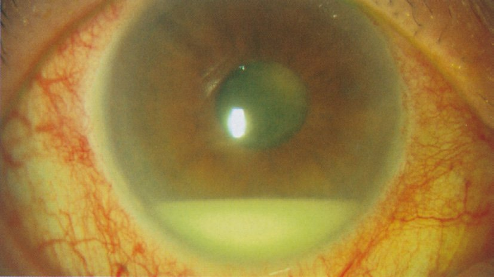
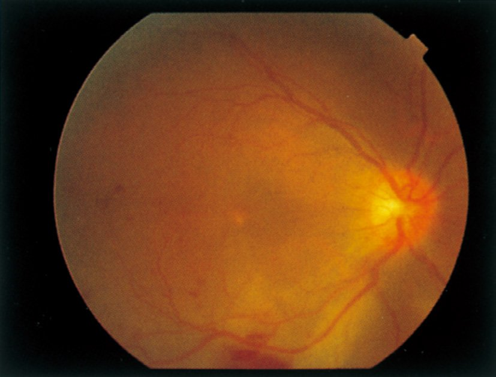
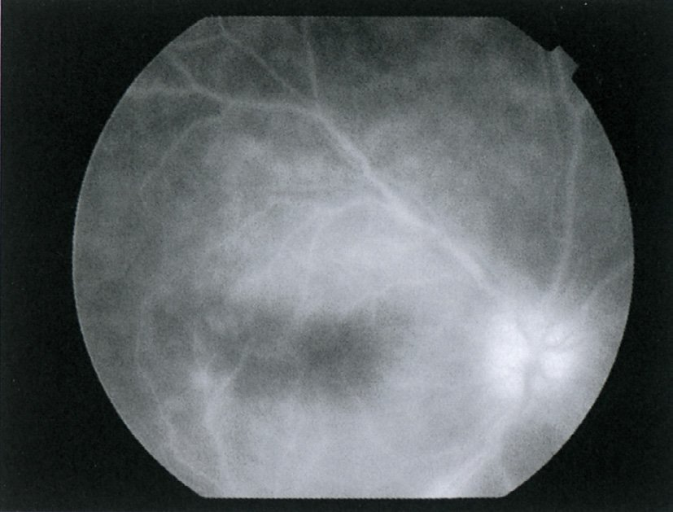
| 型 | 所見と予後 |
|---|---|
| 前眼部型（虹彩毛様体炎） | 前房蓄膿・毛様充血・眼痛・羞明。視力予後は比較的良い |
| 後眼部型（網膜ぶどう膜炎） | 網膜血管炎・網膜滲出斑・硝子体混濁。発作のたびに網膜が不可逆に壊れ、失明の主因になる |
| 選択肢 | 解説 |
|---|---|
| ａ 聴力検査 | 難聴・耳鳴り＝Vogt-小柳-原田病。VKHは両眼が同時に発症し、頭痛・感冒様症状の前駆を伴う。本例は右眼だけ・発作性・2週間で自然軽快を反復しており、Behçet病の眼発作の経過そのものである。 |
| ◯ ｂ 針反応試験 | 正解。Behçet病の副症状としての針反応。皮膚の非特異的過敏性を見る検査で、前腕の皮内を注射針で刺し24〜48時間後に無菌性の膿疱・丘疹ができれば陽性。 |
| ｃ 硝子体生検 | 硝子体生検は眼内リンパ腫（仮面症候群）や感染性眼内炎を疑うときの侵襲的検査。Behçet病は臨床症状で診断する疾患で、硝子体を採っても非特異的な炎症細胞が見えるだけ——診断には結びつかず、侵襲だけが残る。 |
| ｄ ツベルクリン反応 | 結核性ぶどう膜炎の検索、またはサルコイドーシスの陰性化の確認に使う。サルコイドーシスなら雪玉状硝子体混濁・虹彩結節が並ぶはずで、前房蓄膿という所見は合わない。 |
| ◯ ｅ 組織適合抗原〈HLA〉検査 | 正解。HLA-B51を調べる。日本人のBehçet病患者の約60%が陽性（健常者は約15%）で、陽性なら診断を強く支持する。💡 ぶどう膜炎とHLAの対応はB51＝Behçet／B27＝強直性脊椎炎などに伴う急性前部ぶどう膜炎／DR4＝VKH／A29＝バードショット網脈絡膜症。 |
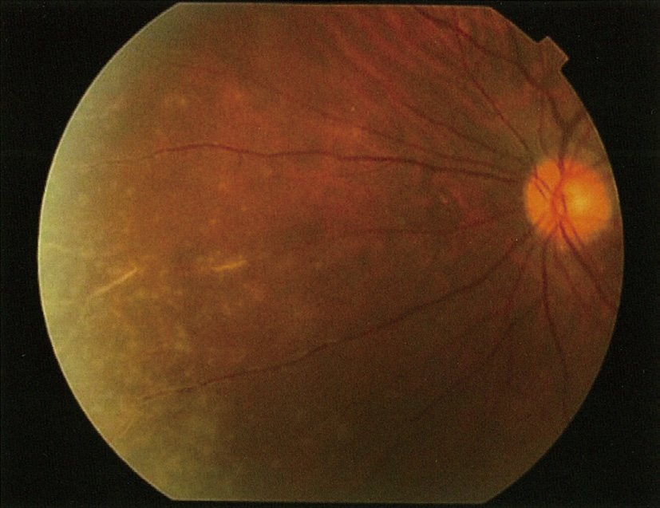
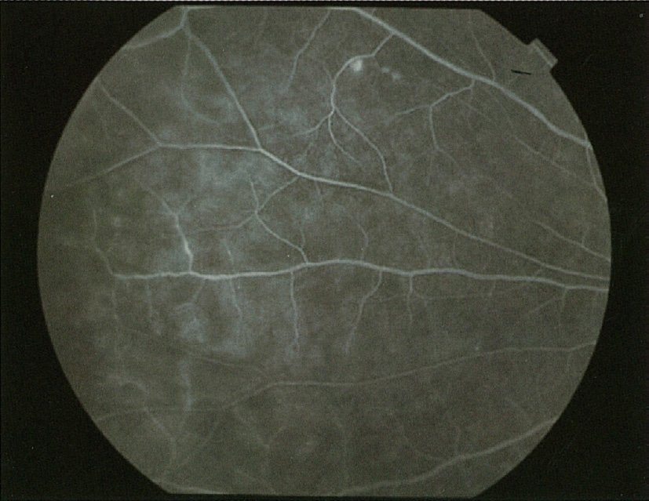
| 機序 | 隅角所見と対応 |
|---|---|
| ①線維柱帯の目詰まり | 炎症細胞・蛋白・色素が流出路を塞ぐ。開放隅角／炎症を鎮めれば戻る |
| ②隅角結節・周辺虹彩前癒着〈PAS〉 | 肉芽腫が隅角に居座り、虹彩が線維柱帯に癒着する。テント状PAS＝サルコイドーシスに特徴的／不可逆 |
| ③瞳孔ブロック（虹彩後癒着） | 虹彩が水晶体に全周癒着し房水が前房へ抜けられず虹彩膨隆〈iris bombé〉→急性の閉塞 |
| 選択肢 | 解説 |
|---|---|
| ◯ ａ 隅角検査 | 正解。サルコイドーシスで両眼の眼圧が28/29mmHgと高い——続発緑内障を疑う場面である。サルコイドーシスは隅角に隅角結節とテント状の周辺虹彩前癒着〈PAS〉を作り、線維柱帯を物理的に塞いで房水の流出を妨げる。この2つは隅角鏡を当てなければ絶対に見えない——眼圧上昇の原因を突き止め、治療（ステロイド点眼で炎症を鎮めるか、房水産生抑制薬を足すか）を決めるための検査である。💡 ぶどう膜炎で眼圧が上がる機序は①炎症細胞・蛋白が線維柱帯を目詰まりさせる ②隅角結節・PAS ③ステロイド緑内障の3つ。いずれも隅角を見なければ切り分けられない。 |
| ｂ 網膜電図 | 網膜電図〈ERG〉は網膜全体の電気的な機能を見る検査で、網膜色素変性・網膜全剝離・眼底が透見できない眼（硝子体出血・成熟白内障）の網膜機能評価に用いる。本例は矯正視力0.8/0.9と保たれ、眼底も透見できている——ERGを取る場面ではない。 |
| ｃ 調節検査 | 調節検査は調節麻痺・調節痙攣・調節性内斜視・老視の評価に用いる（→第1章）。本例の訴えは「両眼のかすみ」で近見の問題ではなく、所見はぶどう膜炎と高眼圧。調節は病態に無関係である。 |
| ｄ 色覚検査 | 色覚検査は先天色覚異常と視神経疾患（視神経炎・エタンブトール中毒など）による後天色覚異常のための検査。サルコイドーシスで視神経が侵されることはあるが、本例で優先される検査ではない。 |
| ｅ 超音波検査 | 眼科の超音波〈Bモード〉は中間透光体が濁って眼底が見えないときに、網膜剝離・硝子体出血・眼内腫瘍を推定する検査。本例は眼底写真も蛍光眼底写真も撮れている＝眼底が見えているので、超音波に置き換える理由がない。 |
| 疾患 | |
|---|---|
| 痛い（前眼部＋眼圧） | 角膜炎・角膜びらん・角膜異物／虹彩毛様体炎（前部ぶどう膜炎）／急性緑内障発作／強膜炎／眼内炎／麦粒腫・涙囊炎 |
| 痛くない（後眼部＋血管） | 硝子体出血／網膜剝離／網膜中心動脈閉塞症・網膜静脈閉塞症／白内障／結膜下出血／開放隅角緑内障／加齢黄斑変性 |
| 選択肢 | 解説 |
|---|---|
| ａ 結膜下出血 | 結膜の細い血管が破れて結膜の下に血がたまるだけの状態で、無痛・視力低下なし・1〜2週間で自然に吸収する。見た目が真っ赤で驚くが、「派手だが何ともない」の代表——異物感を訴えることはあっても「痛み」は出ない。 |
| ◯ ｂ 虹彩毛様体炎 | 正解。前部ぶどう膜炎＝虹彩毛様体炎は眼痛・毛様充血・羞明・流涙・視力低下を4徴とする。痛みの正体は炎症による毛様体筋の攣縮と豊富な三叉神経終末への刺激——「眼の奥が重く痛む」「明るいところがつらい」という訴えになる。診察では角膜輪部を取り巻く紫紅色の毛様充血と前房内の細胞・フレアを見る。💡 羞明の説明——明るい所では縮瞳しようとして炎症で腫れた虹彩が動かされるため痛む。だから散瞳薬（アトロピン・トロピカミド）は虹彩を休ませる鎮痛薬でもあり、同時に虹彩後癒着の予防にもなる。 |
| ｃ 硝子体出血 | 硝子体には知覚神経が無いので出血しても痛くない。症状は突然の飛蚊症（墨を流したよう）と視力低下のみ。原因は増殖糖尿病網膜症・網膜静脈閉塞症・網膜裂孔・外傷。 |
| ｄ 裂孔原性網膜剝離 | 網膜にも知覚神経は無く、剝離しても痛みは出ない。症状は光視症→飛蚊症→視野欠損（カーテンが下りる）→視力低下という無痛の進行。「痛くないのに見えなくなる」からこそ受診が遅れるのが臨床上の問題である。 |
| ｅ 網膜中心動脈閉塞症 | 突然・無痛性・高度の視力低下——これが網膜中心動脈閉塞症の定型的な語り口である。眼底は網膜の乳白色混濁とcherry-red spot。「突然・無痛・片眼・高度」の4語は一時的黒内障や虚血性視神経症とも共通で、痛みが無いことが血管性の目印になる。 |
| 結膜充血 | 毛様充血 | |
|---|---|---|
| 血管 | 結膜の表層血管 | 深層（強膜上）の毛様体前動脈 |
| 分布 | 円蓋部（まぶた側）で強い | 角膜輪部の周囲でいちばん濃い |
| 色 | 鮮紅色 | 紫紅色・暗い |
| 血管の動き | 結膜を押すと一緒に動く | 動かない（強膜に固定） |
| 血管収縮薬 | 退色する | 退色しない |
| 代表疾患 | 結膜炎（無痛・眼脂） | 虹彩毛様体炎・角膜炎・急性緑内障発作（痛い・視力が落ちる） |
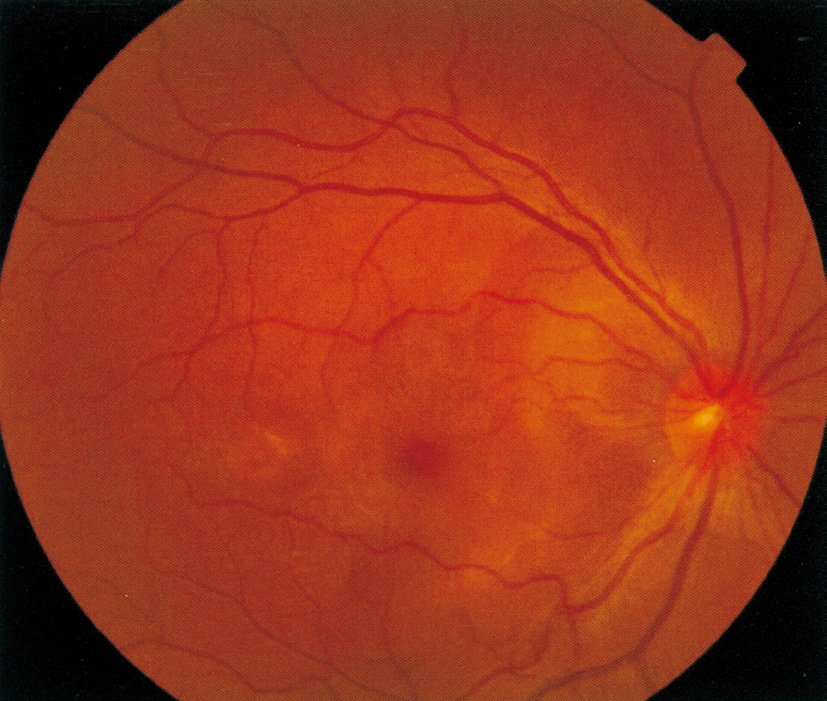
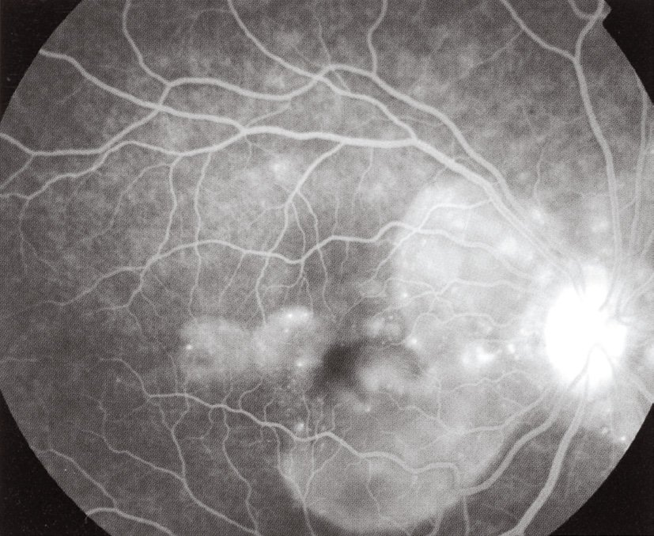
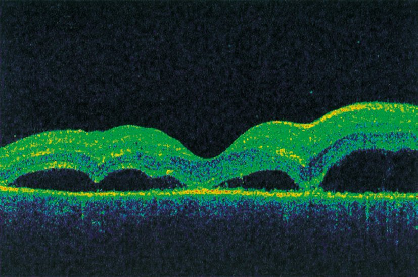
| VKH | CSC | |
|---|---|---|
| 両眼性 | 両眼同時 | 片眼が多い |
| 前房 | 炎症細胞あり | 炎症なし |
| 剝離の数 | 多発 | 単発（黄斑限局） |
| FAの漏出点 | 多発性の点状 | 1〜数個（墨汁流出/噴出像） |
| 全身症状 | 頭痛・耳鳴り・難聴 | なし（ストレス・ステロイドが誘因） |
| 治療 | ステロイドパルス | 経過観察（ステロイドは禁忌） |
| 選択肢 | 解説 |
|---|---|
| ａ 難 聴 | みられる。内耳（蝸牛）にもメラノサイトが存在し、VKHでは難聴・耳鳴り・めまいが前駆期に出る。感音難聴で高音域から障害されるのが典型で、眼症状に数日先行することが多い。 |
| ◯ ｂ 眼底出血 | これがみられない＝正解。VKHの本態は脈絡膜のメラノサイトへの自己免疫性炎症で、脈絡膜が腫れて網膜色素上皮のバリアが破れ、網膜下に漿液がたまる——あくまで「澄んだ水」であって血ではない。血管が破れる病気ではないので、網膜出血・硝子体出血は典型像に含まれない。💡 眼底出血をきたす病気は「血管の病気」——糖尿病網膜症・網膜静脈閉塞症・高血圧網膜症・加齢黄斑変性（滲出型）・Behçet病の網膜血管炎。VKHとCSCは「水がたまるだけで血は出ない」と対で覚える。 |
| ｃ 感冒様症状 | みられる。前駆期に発熱・頭痛・全身倦怠感が出て、「風邪だと思っていた」という病歴になることが多い。髄膜のメラノサイトが侵されるため項部硬直などの髄膜刺激症状を伴うこともある。 |
| ｄ 夕焼け状眼底 | みられる。回復期（発症から数か月後）の所見。脈絡膜のメラノサイトが破壊されて色素が抜け、脈絡膜血管の赤が透けて眼底全体が橙赤色に見える＝sunset glow fundus（→NO.189）。 |
| ｅ 脳脊髄液細胞増多 | みられる。髄膜のメラノサイトへの炎症によりリンパ球優位の細胞増多を認める。VKHの確定診断に用いられる項目で、発症2週以内なら約8割が陽性（→NO.180）。 |
| Behçet病 | Vogt-小柳-原田病 | サルコイドーシス | |
|---|---|---|---|
| 炎症の型 | 非肉芽腫性 | 肉芽腫性 | 肉芽腫性 |
| 両眼性 | 片眼から発症→両眼化 | 両眼同時 | 両眼性が多い |
| 前眼部 | 前房蓄膿（可動性） | 軽度の細胞 | 豚脂様KP・虹彩結節・隅角結節 |
| 硝子体 | 混濁（発作時） | 軽度 | 雪玉状・数珠状混濁 |
| 眼底 | 網膜血管炎・網膜滲出斑 | 漿液性網膜剝離／夕焼け状眼底 | 静脈周囲炎（ろうそくのしずく） |
| 眼以外 | 口内炎・外陰部潰瘍・結節性紅斑 | 頭痛・耳鳴り・難聴・白斑・白毛 | BHL・皮膚結節・心伝導障害 |
| 検査 | 針反応・HLA-B51 | 髄液細胞増多・HLA-DR4 | 血清ACE↑・ツ反陰性・生検 |
| 治療 | コルヒチン・シクロスポリン・抗TNF-α | ステロイドパルス | ステロイド点眼／内服 |
| 選択肢 | 解説 |
|---|---|
| ａ 豚脂様角膜後面沈着物 | 国試ではサルコイドーシスに割り当てられる所見（→NO.181・188）。⚠️ 厳密にはVKHも肉芽腫性ぶどう膜炎なので実臨床では豚脂様KPを認めうる——ただし本問は「VKHに最も特徴的なもの」を2つ選ばせる設問であり、dとeが疑いなくVKH固有である以上、他疾患の代表所見であるaを外すのが正しい読み方である。 |
| ｂ 前房蓄膿 | Behçet病の眼発作の代表所見（→NO.179・182・188・191）。VKHでも前房に炎症細胞は出るが、好中球が層をなしてたまるほどの激烈な前眼部炎症にはならない。 |
| ｃ 雪玉状硝子体混濁 | サルコイドーシスの代表所見（→NO.181）。下方の硝子体に球状の白色混濁が数珠状に連なる——飛蚊症・霧視の原因になる。 |
| ◯ ｄ 漿液性網膜剝離 | 正解。VKH急性期の中核所見。脈絡膜の炎症で網膜色素上皮のバリアが破綻し、網膜下に漿液がたまって網膜がドーム状に浮く。両眼・多発性が特徴で、OCTで一目に分かる。 |
| ◯ ｅ 夕焼け状眼底 | 正解。VKH回復期の中核所見。脈絡膜のメラノサイトが破壊されて色素が抜け、脈絡膜血管の赤が透けて眼底全体が均一な橙赤色になる＝sunset glow fundus。同時期に網膜周辺部の Dalen-Fuchs 結節（黄白色の小斑）や皮膚の白斑・白毛・脱毛が現れる。 |
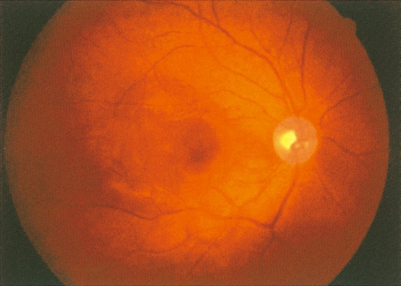
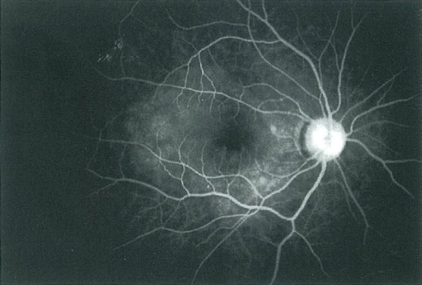
| 屈折の変化 | 疾患 |
|---|---|
| 遠視化 | 漿液性網膜剝離（VKH・CSC）／脈絡膜腫瘍・脈絡膜出血（後方から黄斑を押し上げる）／眼窩腫瘍による眼球圧迫 |
| 近視化 | 核白内障（水晶体の屈折力↑）／高血糖（水晶体が浸透圧で膨化）／調節痙攣／スルホンアミド系・トピラマート（毛様体浮腫） |
| 選択肢 | 解説 |
|---|---|
| ａ Behçet 病 | Behçet病なら口腔潰瘍・外陰部潰瘍・皮疹の病歴があり、眼所見は前房蓄膿か網膜血管炎（血管に沿った白鞘・網膜滲出斑）になる。耳鳴り・頭痛・微熱という前駆も、両眼同時の漿液性網膜剝離もBehçet病の像ではない。 |
| ◯ ｂ Vogt- 小柳- 原田病 | 正解。①5日前からの微熱・頭痛（髄膜）②今朝からの耳鳴り（内耳）③両眼同時の視力低下＋前房の細胞（眼）——メラノサイトのある3か所が順に燃えている。眼底（A）は視神経乳頭の発赤・腫脹と後極のむくんだ黄白色の隆起、FA（B）は多発性の点状過蛍光と色素貯留で両眼の漿液性網膜剝離を裏づける。🔑 視力の数字が決定打——右0.1が＋3.0Dで0.8、左0.08が＋3.5Dで0.7まで上がる＝強い遠視化。網膜が漿液で前方へ持ち上げられたことを数字が語っている。 |
| ｃ サルコイドーシス | サルコイドーシスなら豚脂様KP・虹彩結節・雪玉状硝子体混濁が並ぶ。本例は「角膜・水晶体・硝子体に異常を認めない」と明記されており、この一行がサルコイドーシスを能動的に否定している。 |
| ｄ トキソプラズマ症 | トキソプラズマ網脈絡膜炎は片眼性で、陳旧性の萎縮性瘢痕の縁に新たな白色滲出巣（satellite lesion）が出て、強い硝子体混濁を伴う。両眼同時発症でも全身の前駆症状を伴う疾患でもない。 |
| ｅ 中心性漿液性網脈絡膜症 | CSCも漿液性網膜剝離＋遠視化を起こすので本問で最も紛らわしい選択肢である。しかしCSCは①30〜50歳代男性に多い ②片眼性 ③前房に炎症細胞は出ない ④頭痛・耳鳴り・微熱といった全身症状は無い——本例は4点すべてが合わない。とりわけ「両眼とも前房に細胞を認める」の一行がCSCを完全に否定する——CSCはぶどう膜炎ではない。 |
| 手がかり | VKH | CSC |
|---|---|---|
| 前房の細胞 | あり | なし |
| 年齢・性 | 20〜50歳代・女性にやや多い | 30〜50歳代男性 |
| 眼数 | 両眼同時 | 片眼 |
| 前駆症状 | 頭痛・耳鳴り・微熱 | なし（ストレス・ステロイド） |
| 乳頭 | 発赤・腫脹 | 正常 |
| FA | 多発性の点状漏出 | 1〜数個の漏出点 |
| 治療 | ステロイドパルス | 経過観察・ステロイドは中止 |
| 原因 | 蓄膿の性状と経過 |
|---|---|
| Behçet病 | サラサラで可動性（フィブリンに乏しい）。数日〜2週で自然軽快し反復 |
| 細菌性眼内炎 | 線維素性で固まり動かない。術後・外傷後・転移性。放置で失明へ一直線 |
| 細菌性角膜潰瘍 | 角膜に白色の潰瘍があり、その反応として蓄膿が出る（無菌性のことも） |
| HLA-B27関連ぶどう膜炎 | 強直性脊椎炎・反応性関節炎・炎症性腸疾患に伴う。フィブリン析出が強い |
| 選択肢 | 解説 |
|---|---|
| ａ 感音難聴 | Vogt-小柳-原田病の症状。内耳のメラノサイトが標的になり、高音域から始まる感音難聴・耳鳴り・めまいを来す。Behçet病でも神経Behçetでは聴覚症状が出うるが、「Behçet病といえば」の所見ではない。 |
| ◯ ｂ 前房蓄膿 | 正解。前房蓄膿を伴う虹彩毛様体炎＝Behçet病の眼発作の代表所見。好中球が前房下方に層をなしてたまり、虹彩の下縁に水平のレベルを作る。フィブリンに乏しくサラサラで、顔を傾けると動く（可動性）のが細菌性眼内炎の固まった蓄膿との違い。💡 前房蓄膿を作る他の疾患——細菌性・真菌性眼内炎（術後・転移性）、重症の細菌性角膜潰瘍、HLA-B27関連の急性前部ぶどう膜炎。「痛い・急・膿」の3語で並ぶ。 |
| ｃ 虹彩結節 | サルコイドーシスの所見。Koeppe結節（瞳孔縁）とBusacca結節（虹彩実質）があり、肉芽腫が虹彩に作る小結節である。Behçet病は非肉芽腫性の炎症なので結節は作らない。 |
| ｄ 夕焼け眼底 | Vogt-小柳-原田病の回復期の所見。脈絡膜のメラノサイトが脱落し、脈絡膜血管の赤が透けて眼底が均一な橙赤色になる。 |
| ｅ 豚脂様角膜後面沈着物 | 肉芽腫性ぶどう膜炎の印で、国試ではサルコイドーシスに割り当てられる。Behçet病のKPは細かい塵状（非肉芽腫性）である。 |
| 肉芽腫性 | 非肉芽腫性 | |
|---|---|---|
| 主役の細胞 | 類上皮細胞・多核巨細胞 | 好中球・リンパ球 |
| 角膜後面沈着物 | 豚脂様（大きい） | 塵状（細かい） |
| 虹彩結節 | あり | なし |
| 前房蓄膿 | まれ | あり（好中球が主役だから） |
| 代表疾患 | サルコイドーシス・VKH・結核・梅毒・交感性眼炎 | Behçet病・HLA-B27関連・若年性特発性関節炎 |
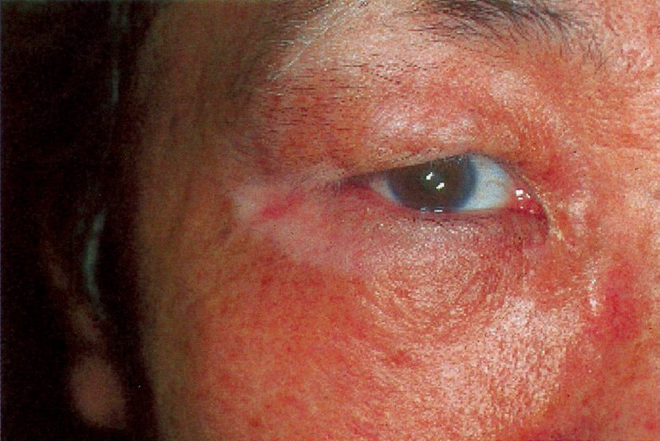
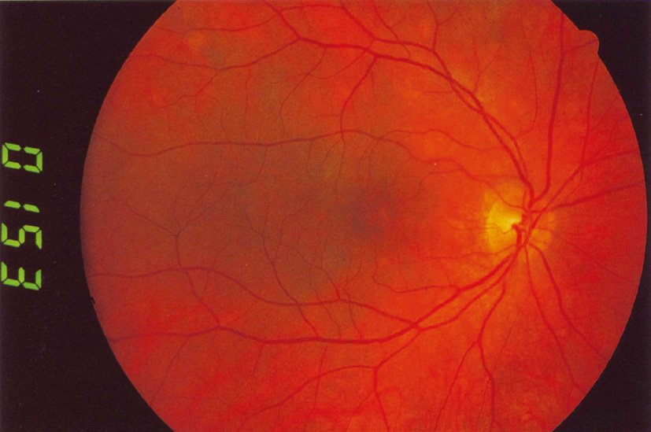
| メラノサイトの場所 | 出る症状 |
|---|---|
| 脈絡膜（ぶどう膜） | 両眼性汎ぶどう膜炎・漿液性網膜剝離→回復期に夕焼け状眼底・Dalen-Fuchs結節 |
| 内耳（蝸牛の血管条） | 感音難聴・耳鳴り・めまい |
| 髄膜（軟膜） | 頭痛・項部硬直・髄液細胞増多 |
| 皮膚・毛球 | 白斑〈vitiligo〉・白毛〈poliosis〉・脱毛 |
| 選択肢 | 解説 |
|---|---|
| ａ 触 覚 | 触覚を伝えるのはMeissner小体・Merkel細胞などの機械受容器と後索-内側毛帯路で、メラノサイトは関与しない。 |
| ｂ 味 覚 | 味覚は舌の味蕾（顔面神経鼓索枝・舌咽神経）が担う。メラノサイトとは無関係。 |
| ◯ ｃ 聴 覚 | 正解。Vogt-小柳-原田病の回復期である。内耳（蝸牛の血管条）にはメラノサイトが分布しており、VKHの自己免疫がここを侵すため感音難聴・耳鳴り・めまいを来す。高音域から障害される感音難聴で、多くは眼症状に数日先行して前駆期に出る（本例では4か月前の眼のかすみが眼病期に相当する）。 |
| ｄ 嗅 覚 | 嗅覚は鼻腔天蓋の嗅上皮が担う。メラノサイトを含まず、VKHの標的にならない。 |
| ｅ 温痛覚 | 温痛覚は自由神経終末と脊髄視床路が担う。白斑の部位でも温痛覚は保たれる——白斑と知覚脱失が同居したら Hansen病（らい）を考える別問題になる。 |
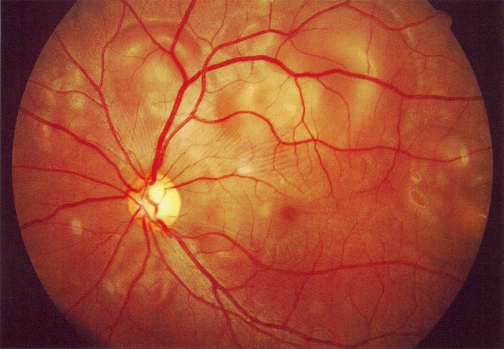
| 目的 | 検査 | 期待する所見 |
|---|---|---|
| 眼の証拠 | 蛍光眼底造影〈FA〉 | 多発性の点状過蛍光＋色素貯留・乳頭過蛍光 |
| 眼の証拠（補助） | OCT | 漿液性網膜剝離・脈絡膜肥厚（EDI-OCT） |
| 眼以外の証拠 | 髄液検査 | リンパ球優位の細胞増多 |
| 背景 | HLA検査 | HLA-DR4（DRB1*04:05） |
| 聴覚 | 純音聴力検査 | 高音域優位の感音難聴 |
| 選択肢 | 解説 |
|---|---|
| ａ 血糖値測定 | 糖尿病網膜症を疑うときの検査だが、糖尿病網膜症は毛細血管瘤・点状出血・硬性白斑から始まり両眼同時に急激な視力低下を起こす病気ではない。24歳・3日の経過・前房の炎症細胞とはまったく像が合わない。 |
| ｂ 胸部エックス線撮影 | 両側肺門リンパ節腫脹〈BHL〉を探す＝サルコイドーシスの検査。サルコイドーシスなら豚脂様KP・虹彩結節・雪玉状硝子体混濁が並び、頭痛・耳鳴りという前駆症状は伴わない。 |
| ◯ ｃ 蛍光眼底造影 | 正解。VKHの眼所見を確定する検査。造影早期から多発性の点状過蛍光（漏出点）が現れ、後期には網膜下腔に色素がたまって斑状に光る（pooling）——視神経乳頭も過蛍光になる。「漿液性網膜剝離が多発している」ことを可視化し、単一の漏出点しか出ないCSCと切り分ける。 |
| ◯ ｄ 髄液検査 | 正解。VKHの眼以外の証拠を取りにいく検査。髄膜のメラノサイトへの炎症でリンパ球優位の細胞増多を認め、発症2週以内なら約8割で陽性——本例の3日前からの頭痛がまさにこれである。 |
| ｅ リンパ節生検 | リンパ節生検はサルコイドーシス（非乾酪性肉芽腫）や悪性リンパ腫を疑うときの検査。VKHではリンパ節腫脹を来さず、生検する対象が無い。 |
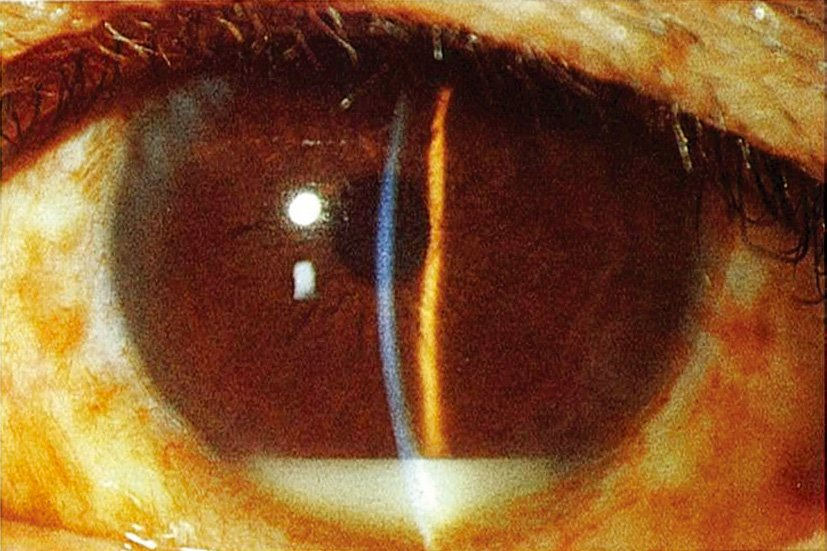
| 混濁の場所 | 読み方と代表疾患 |
|---|---|
| 角膜そのものが白い | 角膜潰瘍・角膜浸潤（細菌・真菌・アカントアメーバ）／角膜混濁・水疱性角膜症 |
| 角膜の裏面に粒が付く | 角膜後面沈着物〈KP〉＝豚脂様（肉芽腫性）／塵状（非肉芽腫性） |
| 前房下方に水平のレベル | 前房蓄膿（白〜黄白色）／前房出血（赤色・外傷） |
| 前房全体がかすむ | フレア（蛋白）・細胞＝活動性の前部ぶどう膜炎 |
| 瞳孔領が白い | 白内障／小児なら白色瞳孔（網膜芽細胞腫・先天白内障・未熟児網膜症） |
| 選択肢 | 解説 |
|---|---|
| ◯ ａ Behçet 病 | 正解。写真では前房の下方に水平のレベルを作る白色の層＝前房蓄膿が写り、角膜自体は透明で潰瘍や浸潤は無い。「角膜はきれいなのに前房に膿がある」＝炎症の場は角膜ではなく虹彩毛様体である——前房蓄膿を伴う虹彩毛様体炎と読む。45歳男性・1週の経過・両眼の視力低下という非感染性・反復性を思わせる像で、成人の非感染性前房蓄膿の代表＝Behçet病を選ぶ。 |
| ｂ 細菌性眼内炎 | 細菌性眼内炎も前房蓄膿を作るが、眼内手術・穿孔性外傷の既往か、全身の感染巣からの血行性転移（肝膿瘍・感染性心内膜炎・カテーテル感染）が必ず背景にある。本例はそうした既往の記載が無く、しかも両眼性——細菌性眼内炎が両眼同時に起こることはまずない。また蓄膿は線維素性で固まり、強い眼痛と結膜浮腫を伴い、数日で光覚を失うほど急激である。 |
| ｃ 角膜細菌感染症 | 細菌性角膜潰瘍でも二次的に前房蓄膿が出るが、主役はあくまで角膜の病変——角膜に白色の潰瘍・浸潤が写り、フルオレセインで染まる上皮欠損があるはずである。本例の写真は角膜が透明で病変が無い。またコンタクトレンズ装用・外傷という誘因の記載も無く、両眼性である。 |
| ｄ サルコイドーシス | サルコイドーシスの前眼部所見は豚脂様角膜後面沈着物・虹彩結節・隅角結節・虹彩後癒着で、前房蓄膿は典型的でない。経過も数か月かけて緩徐で、主訴は飛蚊症・霧視になることが多い。 |
| ｅ Vogt- 小柳- 原田病 | VKHは両眼同時発症という点だけは合うが、主役は後眼部（漿液性網膜剝離）であり前房蓄膿は作らない。また頭痛・耳鳴り・感冒様症状の前駆が本例には記載されていない。 |
| 片眼性が原則 | 両眼性が原則 |
|---|---|
| 感染性眼内炎・細菌性角膜炎／網膜剝離／網膜血管閉塞／中心性漿液性脈絡網膜症 | Vogt-小柳-原田病／サルコイドーシス／糖尿病網膜症／網膜色素変性／甲状腺眼症 |